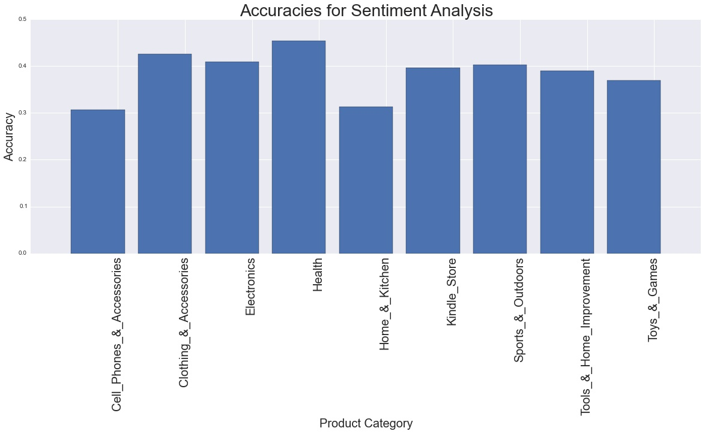

Give It Five Stars!
An Exploration of Amazon Product Reviews
Linda Du Max Lu Daniel Park
View the Project on GitHub mylu/cs109site
HomeOverview
Analysis
Methods
Results
Results
Summary
From our exploratory analysis, we see that reviews are heavily skewed towards the extremes (5 star and 1 star reviews); indicating that there may be some response bias; people usually only write a review if they have strong feelings. The majority of scores are 5 stars, suggesting inflation in Amazon scores. This behavior is evident across all time periods and classes.
Looking at the time correlation data, we see that the moving average of the 20 most review scores for a given product oscillates up and down. Although this oscillation may be due to temporal changes in product quality or public opinion, we see this behavior across all products. The data likely suggests that reviews are dependent on each other; Amazon users' reviews are likely influenced byprevious users' reviews.
Our three classification methods produced accuracies up to 60% by examining review text alone. We outline each result below:
Bag of Words
Bag of Words/N-Grams gave us decent results with around 50% accuracy for unigrams to as low as 20% with trigrams. Combining unigrams and bigrams (unibigrams) and all three of the N-gram models (allgrams) did not lead to better performance than the unigrams alone. The reason for bigrams and trigrams not having great predictive accuracy is that the frequency of most bigrams and trigrams within one review was likely very low, so each bigram or trigram was not assigned as high of a weight by the classifier. Thus for the trigrams, the classifier was only as accurate as random guessing of the score (20%). The results by product category were very similar, however, indicating that predictive capacity for scores does not vary much with this model by category.
Sentiment Analysis
We train the sentiment analysis program separately for each category of reviews because each category comes with a different set of adjectives (positive and negative) that make sense. For example, "realistic" is a positive adjective for video games, but would not make sense for home & kitchen. "Functional", "Sturdy", and "Protective" are positive adjectives that apply specifically to cell phones. Of course, there are also many general adjectives to be found (i.e. terrible, perfect, etc). We see that for all categories, we have an accuracy of 30-50% and an average error of around 1.6. Some other methods that we could further explore include a more specific metric for the polarity of an adjective. Right now, we do not differentiate between something like "good" and "fantastic". This will give us more nuanced predictions for ratings. Now, we simply use the frequency of positive adjectives to determine the rating. Taking into account polarity would be much better. Furthermore, we should do an analysis of bigrams to reverse any adjectives with something like a "not" in front of it.
Latent Dirichlet Allocation
LDA gave us the highest classification accuracy at approximately 60%. Looking at the performance across different product categories, we see that cell phones & accessories performs the worst, while arts performs the best. LDA probably performed the best because, rather than the independent bag of words model, we were able to capture te relationships between words in our reviews and how they relate to topics. LDA does not assume independence, so although runtime was longer we retained more information from the original text.